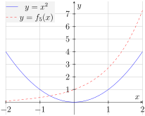
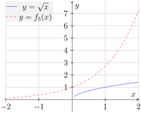
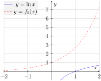
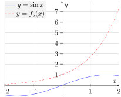
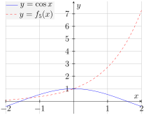

Section 9.1 Power Series (PS1)
Learning Outcomes
Approximate functions defined as power series.
Activity 9.1.1.
Consider the series \(\displaystyle \sum_{n=0}^\infty \frac{1}{n!}x^n\) where \(x\) is a real number.
(a)
If \(x=2\text{,}\) then \(\displaystyle \sum_{n=0}^\infty \frac{1}{n!}x^n=\sum_{n=0}^\infty \frac{2^n}{n!}\text{.}\) What can be said about this series?
The techniques we have learned so far allow us to conclude that \(\displaystyle \sum_{n=0}^\infty \frac{1}{n!}x^n=\sum_{n=0}^\infty \frac{2^n}{n!}\) converges.
The techniques we have learned so far allow us to conclude that \(\displaystyle \sum_{n=0}^\infty \frac{1}{n!}x^n=\sum_{n=0}^\infty \frac{2^n}{n!}\) diverges.
None of the techniques we have learned so far allow us to conclude whether \(\displaystyle \sum_{n=0}^\infty \frac{1}{n!}x^n=\sum_{n=0}^\infty \frac{2^n}{n!}\) converges or diverges.
(b)
If \(x=-100\text{,}\) then \(\displaystyle \sum_{n=0}^\infty \frac{1}{n!}x^n=\sum_{n=0}^\infty \frac{(-100)^n}{n!}\text{.}\) What can be said about this series?
The techniques we have learned so far allow us to conclude that \(\displaystyle \sum_{n=0}^\infty \frac{1}{n!}x^n=\sum_{n=0}^\infty \frac{(-100)^n}{n!}\) converges.
The techniques we have learned so far allow us to conclude that \(\displaystyle \sum_{n=0}^\infty \frac{1}{n!}x^n=\sum_{n=0}^\infty \frac{(-100)^n}{n!}\) diverges.
None of the techniques we have learned so far allow us to conclude whether \(\displaystyle \sum_{n=0}^\infty \frac{1}{n!}x^n=\sum_{n=0}^\infty \frac{(-100)^n}{n!}\) converges or diverges.
(c)
Suppose that \(x\) were some arbitrary real number. What can be said about this series?
The techniques we have learned so far allow us to conclude that \(\displaystyle \sum_{n=0}^\infty \frac{1}{n!}x^n\) converges.
The techniques we have learned so far allow us to conclude that \(\displaystyle \sum_{n=0}^\infty \frac{1}{n!}x^n\) diverges.
None of the techniques we have learned so far allow us to conclude whether \(\displaystyle \sum_{n=0}^\infty \frac{1}{n!}x^n\) converges or diverges.
Activity 9.1.2.
Since \(\displaystyle \sum_{n=0}^\infty \frac{1}{n!}x^n\) converges for each real value \(x\text{,}\) we can define a function \(f(x)=\displaystyle \sum_{n=0}^\infty \frac{1}{n!}x^n\) which assigns to each input \(x\) the sum \(\displaystyle \sum_{n=0}^\infty \frac{1}{n!}x^n\text{.}\)
(a)
To estimate \(f(2)\text{,}\) we consider \(f_{5}(x)=\displaystyle \sum_{n=0}^5 \frac{1}{n!}x^n=1+x+\frac{1}{2}x^2+\frac{1}{6}x^3+\frac{1}{24}x^4+\frac{1}{120}x^5.\) What is \(f_5(2)\text{?}\)
\(f_5(2)=4\left(1+x+\frac{1}{2}x^2+\frac{1}{6}x^3+\frac{1}{24}x^4+\frac{1}{120}x^5\right)=4+4x+2x^2+\frac{2}{3}x^3+\frac{1}{6}x^4+\frac{1}{30}x^5\text{.}\)
\(f_5(2)=1+2+\frac{1}{2}2+\frac{1}{6}2+\frac{1}{24}2+\frac{1}{120}2=\frac{133}{30}\approx 4.4333\text{.}\)
\(f_5(2)=1+2+\frac{1}{2}2^2+\frac{1}{6}2^3+\frac{1}{24}2^4+\frac{1}{120}2^5=\frac{109}{15}\approx 7.2667\text{.}\)
(b)
To which of these values is \(f_5(2)\) the closest?
\((2)^2\text{.}\)
\(\sqrt{2}\text{.}\)
\(e^2\text{.}\)
\(\ln(2)\text{.}\)
\(\sin(2)\text{.}\)
\(\cos(2)\text{.}\)
(c)
Consider the plot of \(y=f_5(x):\)
Which of the following plots does the plot \(y=f_5(x)\) most resemble?
-
\(y=x^2\text{.}\) 
Figure 160. Plots of \(y=f_5(x), y=x^2\text{.}\) -
\(y=\sqrt{x}\text{.}\) 
Figure 161. Plots of \(y=f_5(x), y=\sqrt{x}\text{.}\) -
\(y=e^x\text{.}\)
Figure 162. Plots of \(y=f_5(x), y=e^x\text{.}\) -
\(y=\ln{x}\text{.}\) 
Figure 163. Plots of \(y=f_5(x), y=\ln{x}\text{.}\) -
\(y=\sin{x}\text{.}\) 
Figure 164. Plots of \(y=f_5(x), y=\sin{x}\text{.}\) -
\(y=\cos{x}\text{.}\) 
Figure 165. Plots of \(y=f_5(x), y=\cos{x}\text{.}\)
Definition 9.1.3.
For a real number \(c\) a power series centered at \(c\) is a series \(\displaystyle\sum_{n=0}^\infty a_n (x-c)^n\) where each coefficient \(a_n\) is a real number.
For the values of \(x\) where \(\displaystyle\sum_{n=0}^\infty a_n (x-c)^n\) converges, we can define a function \(p(x)=\displaystyle\sum_{n=0}^\infty a_n (x-c)^n\text{.}\) We can define \(p_k(x)=\displaystyle\sum_{n=0}^k a_n (x-c)^n\) to be the degree \(k\) polynomial approximation of \(p(x)\text{.}\)
Example 9.1.4.
Consider the power series \(\displaystyle \sum_{n=0}^\infty a_nx^n\text{.}\) We could compute \(\frac{d}{dx}\left[\displaystyle \sum_{n=0}^\infty a_nx^n\right]\) by:
We could also compute \(\frac{d}{dx}\left[\displaystyle \sum_{n=0}^\infty a_nx^n\right]\) by:
Activity 9.1.5.
(a)
Given \(f(x)=\displaystyle \sum_{n=0}^\infty \frac{1}{n!}x^n\text{,}\) which of the following best represents \(f'(x)=\frac{d}{dx}\left[\displaystyle \sum_{n=0}^\infty \frac{1}{n!}x^n\right]\text{?}\)
\(\displaystyle \sum_{n=0}^\infty \frac{1}{n!}x^n\text{.}\)
\(\displaystyle \sum_{n=0}^\infty \frac{1}{n!}x^{n-1}\text{.}\)
\(\displaystyle n\sum_{n=0}^\infty \frac{1}{n!}x^{n-1}\text{.}\)
\(\displaystyle n\sum_{n=0}^\infty \frac{1}{(n-1)!}x^{n-1}\text{.}\)
\(\displaystyle n\sum_{n=1}^\infty \frac{1}{(n-1)!}x^{n-1}\text{.}\)
(b)
For which of the following is \(y=\frac{dy}{dx}\text{?}\)
\(y=x^2\text{.}\)
\(y=\sqrt{x}\text{.}\)
\(y=e^x\text{.}\)
\(y=\ln(x)\text{.}\)
\(y=\sin(x)\text{.}\)
\(y=\cos(x)\text{.}\)
Fact 9.1.6.
We have that
What we mean by equality is that for any real number \(x\text{,}\) the series \(\displaystyle \sum_{n=0}^\infty \frac{1}{n!}x^n\) will converge to \(e^x\text{.}\)
Activity 9.1.7.
Estimate \(e^{-3}\) using \(e^x\approx f_6(x)=\displaystyle \sum_{n=0}^6 \frac{1}{n!}x^n=1+x+\frac{1}{2}x^2+\frac{1}{6}x^3+\frac{1}{24}x^4+\frac{1}{120}x^5+\frac{1}{720}x^6\) by evaluating \(f_6(-3)\text{.}\)
Example 9.1.8.
Consider the power series \(\displaystyle \sum_{n=0}^\infty a_nx^n\text{.}\) We could compute \(\displaystyle\int \sum_{n=0}^\infty a_nx^ndx\) by:
We could also compute \(\displaystyle\int \sum_{n=0}^\infty a_nx^ndx\) by:
Activity 9.1.9.
Consider a function \(p(x)\) defined by \(\displaystyle p(x)=\sum_{n=0}^\infty \frac{2^n}{(2n)!}x^n.\)
(a)
Find \(p_4(x)\text{,}\) the degree 4 polynomial approximation for \(p(x)\text{.}\)
(b)
Use \(p_4(x)\) to estimate \(p(-1)\) by computing \(p_4(-1)\text{.}\)
(c)
Use \(p_4(x)\) to estimate \(\displaystyle \int_3^6 p(x)\,dx\) by computing \(\displaystyle \int_3^6 p_4(x)\,dx\text{.}\)